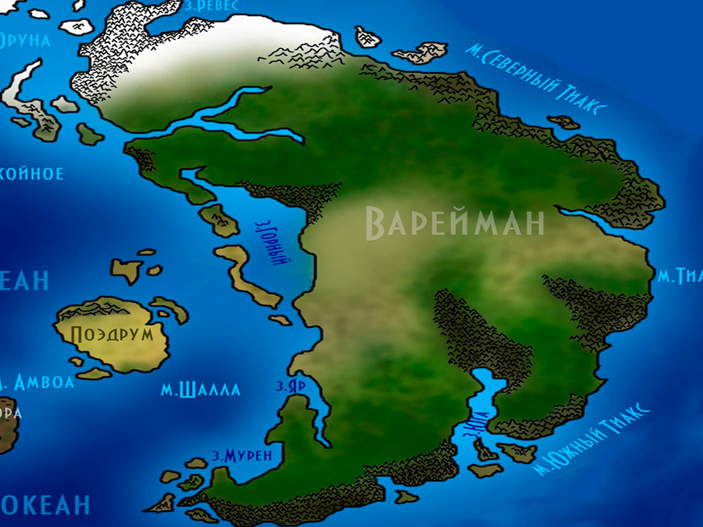

Варейман
Варейман — большой континент, богатый ресурсами и древний, как сама Мать. Его города — каждый по совместительству крепость, потому что за стенами небезопасно даже днём. Здесь люди, эльфиниты, зверлинги и полукровки живут по делам, а не по крови, а законы Юстиция держат равновесие после страшной Декады Крови.
Карта Вареймана
Степи, горы, леса и города-крепости
images/vareyman-map.jpgРекомендуемый размер:
1200 × 900 px (4:3)

Составлена по рассказам жителей городов-крепостей и по балладам о Ворадоре. Там, где линии расходятся со степью, — верьте степи.
Водные ресурсы
От жажды на этом острове не умирают — подземные источники дают воды в достатке для любого города. Имеется также несколько пресных озёр, весьма глубоких и площадью, в среднем, 40 000–41 000 км². Достаточно часто здесь идут дожди, и это является одной из причин отсутствия недостатка водных ресурсов на данном континенте. Среднегодовая влажность здесь варьируется от 40 до 70 процентов, в зависимости от того, на какой части континента.
Полезные ископаемые
Для большого континента — большое количество ископаемых и иных ресурсов. Наверное, этим Мать и руководствовалась, когда создавала Варейман. Медь, железо, олово, вольфрам, кобальт… Разнообразие металлов здесь невероятно, однако далеко не каждый решится спуститься в глубины горы из-за одной их особенности, и потому в основном довольствуются топливными ископаемыми, вроде каменного угля, а также медью, оловом, железом и несколькими другими, необходимыми для создания снаряжения, коим вооружают солдат. Соответственно, полезными ископаемыми торгуют они не только между собой — иногда часть полезных ископаемых продаётся за хорошую цену на иные континенты.
Климат
Достаточно приятный климат, ничего не скажешь. Нет жары летом, нет слишком сильных холодов, однако особенности имеются вполне логичные — в степях в центре острова холода из-за относительно низкой в сравнении с другими частями острова влажности чувствуются слабее. Однако в то же время здесь жарче летом, хотя и это, опять же, чувствуется не так сильно по той же причине.
В горах же достаточно холодно, влажность умеренная. В лесах — влажность умеренная, равно как и холода и жара, типичный климат Восточной Европы, наверное.
Животные и растения
Представители фауны достаточно типичны для таких мест. В степях имеются стаи степных, простите за каламбур, волков, коих достаточно много (в одном из городов-крепостей их даже приручают). Помимо того, изредка там можно встретить медведя, нередко — сусликов и тушканчиков, а также степных орлов и змей, впрочем, слабо ядовитых (яд не смертелен).
Там же, в степях, произрастают три знаменитых на острове вида растений. Светоч Знаний — концентрированная настойка коего позволяет намного проще воспринимать информацию любого вида и тем самым облегчает обучение. Болиголов — настойка коего является опасным ядом, сочетающим в себе следующие поражающие факторы: запор, паралич, жар, лихорадка и, в особо сильных концентрациях, некроз. И, наконец, третье — Пчелиный Глаз, названный так за свой внешний вид, из-за чего его также легко спутать с подсолнухом, однако свойства его достаточно полезны для организма — настойки из этого растения (которое, кстати, довольно редкое) дают очень крепкое здоровье, однако стоят они соответствующе: пять тысяч золотых за один флакончик и три тысячи за один экземпляр растения. Имеются и другие растения — они соответствуют любой степи.
Население и города
Имеется немалое количество стран, а соответственно — и городов, однако каждый город является по совместительству и крепостью, поскольку за городскими стенами банально небезопасно даже днём. Основное население составляют здесь люди, все остальные — эльфиниты, зверлинги и другие полукровки с людской кровью. Соответственно, ксенофобии здесь сильно выраженной не имеется, и оценивать личность народ привык в основном по его делам. Распределены все равномерно, нет такого, чтобы один город принадлежал полностью определённой расе — везде найдутся представители и других помесей.
Однако нередко случались войны за территории. Республик здесь не имеется, лишь королевства или объединения королевств. Особую власть здесь имеют третьи по силе служители Юстиция — главные хранители законов континента и его создатели. Религия данная быстро распространяется, поскольку это удобно для любого законопослушного гражданина. Что до двух других сил — это коалиции государств, в каждом из коих Юстицианизм имеет своё влияние. В последнее время конфликты здесь являются редким явлением, поскольку последняя произошедшая война была ужасающей, разрушительным вихрем пронёсшейся по континенту.
История
Варейман был эдакой жемчужиной в своё время. Хотя он таковой жемчужиной до сих пор и является, заселённый огромным количеством городов и процветающих. Мать создала этот материк большим, и он был древнее, нежели Эльхар, однако позже на нём начали обитать существа, порождённые Первым Хаосом.
Когда-то давно ссылались в вечное плавание корабли с заключёнными, обречёнными на пожизненное заключение. И тогда большая их часть наткнулась на огромный материк, полный различных ресурсов. Заключённые начали осваивать эту местность, их было много, и каждый из них что-то да знал. В результате возникло около сотни мелких государств на разных частях континента, и каждое из них было также по совместительству городом-крепостью. Каждый город развивался самостоятельно и развивался быстро, ремесла в нём процветали, культура тоже имела место быть.
И вот однажды на остров попал драконий потомок, который изменил судьбу жителей Вареймана. Этого драконьего потомка звали Ворадором. Никто не помнит точно, из-за чего он попал на остров, что, в принципе, свойственно легендам. Но все отмечали его невероятные качества — его обучаемость и ум делали в глазах жителей едва ли не полубогом, коим он, предположительно, являлся, а сила его тела и духа вселяли в народ Вареймана надежды на светлое будущее. И оно свершилось.
Не больше чем через пять лет один из городов-крепостей, ныне занятый культом Ворадора, достиг невероятного развития в ремёслах и военном деле. И тогда начался военный поход против каждой вредящей народу твари, против каждого опасного монстра, порождённого Первым Хаосом. Они безжалостно уничтожались войсками Ворадора и им самим, возглавившим этот поход. Поход продолжался десятки лет, военные силы становились всё сильнее, а города-крепости объединялись друг с другом для борьбы с монстрами, нападающими на города. Поговаривают, что от Ворадора исходил слепящий тварей свет, а боевой его клич был слышен на всём континенте, однако кто знает, правда ли это…
Тем не менее в результате всего практически вся порождённая Первым Хаосом фауна и флора были перебиты, а государства на острове объединились под одним знаменем, знаменем Конклава, ставшим по силе первым на континенте и до сих пор остающимся таким. В конце же похода Ворадор исчез. Перед самым его концом, точнее — он сражался с исполинским хтоническим ужасом, который можно описать как воплощение самого Первого Хаоса — постоянно изменяющийся, текучий облик, невероятное могущество и разрушительное влияние на всё вокруг были в его распоряжении. В вспышке яркого света, сопровождавшейся яростным воплем, оглушившим ближайших сражавшихся воинов, исчезли Ворадор и воплощение Первого Хаоса.
Однако память об этом великом полководце осталась на острове, и в каждом городе как герою ему поставлено по памятнику, его воспевают в балладах, а те, кто являются потомками его первых соратников, и вовсе почитают его как бога, и являются они вторым по силе и военным, и религиозным формированием на Вареймане. Их резиденция является по совместительству самым лучшим по всем параметрам городом-крепостью на материке. Поход же запомнился всем как Великий Триумф.
Однако на этом история острова не заканчивается. Не так давно, лет десять-пятнадцать назад, началась междоусобица в Конклаве, в результате коей началась война, кровопролитная и ужасная, полная раздора, болезней и бедности. Продолжавшаяся более чем десять лет, она была завершена заключением под арест Казимира Свежевателя, не так давно отправленного на исправительную миссию жрецами Юстиция, которые, в свою очередь, возглавили Конклав, став в какой-то мере хранителями равновесия и закона на континенте. Война же запомнилась как Декада Крови и Ненависти. Сейчас королевства восстанавливаются после войны, зализывают свои раны после кровопролитной Декады.
Достопримечательности и особенности
Каждый город-крепость защищён просто прекрасно и, что необычно, влияния демонов на острове не проглядывается. Более того, в каждом из городов имеется статуя величественного героя острова — Ворадора. Также один из городов-крепостей, практически сильнейший, занят культом Ворадора, боевых храмовников, поклоняющихся Ворадору как богу. Более того, королевств невероятно много, потому что практически каждый город-крепость (который довольно обширен) представляет собой отдельное государство. Однако вместе с этим на острове действуют общепринятые, введённые Юстицианитами законы.
География Мериона · Континент Варейман